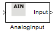
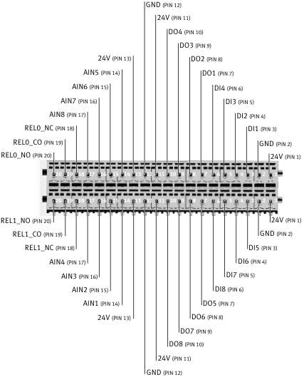

AnalogInput
Contents

There are 8 Analog Inputs available on Robotino (see figure below: AIN1 - AIN8). The analog inputs can be connected to various devices/detectors and values can be read from them. For instance, Robotino could be equipped with inductive sensors connected to its analog inputs.

Block properties
Inputs
- ComId
Outputs
- Value - the value at the specified AnalogInput number.
Parameters
- AnalogInput Number - Range is 0 - 7